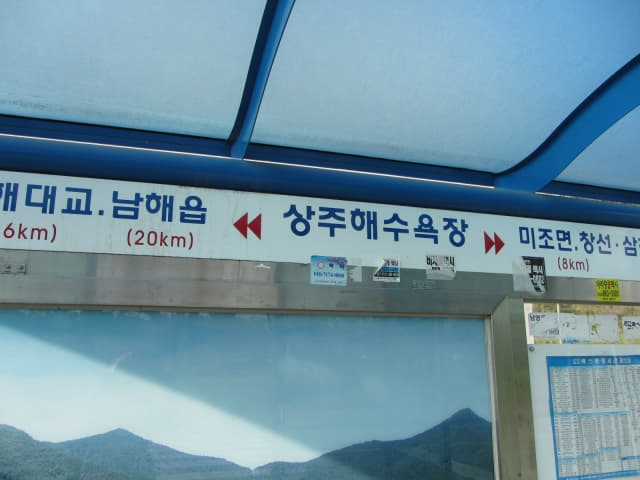

在「상주해수욕장」巴士站等了約半小時, 當地一位市民好像向我們表示很久才有巴士, 便決定再走往南海銀尚州銀沙海灘逛逛, 匆匆走到沙灘旁的油菜花田, 流連了一會, 恐怕巴士隨時駛來, 又匆匆跑回「상주해수욕장」巴士站。

「상주해수욕장」巴士站旁有幾株櫻花, 開得十分燦爛, 很美!
銀尚州銀沙海灘乘巴士返回南海公用客運站
正在欣賞櫻花之際, 一輛巴士從左邊的山坡上緩緩駛來, 和車長確定了是往南海公用客運站 (남해시외버스터미널), 便安心的登上了巴士, 車票每位是 2,500 韓元, 和來的時候一樣, 但多坐幾個站。
坐下來, 時間約下午六時十二分, 這時太陽已經掛在西山上, 一天又將近結束, 而我們的南海行程也來到尾聲。
約下午六時三十分, 巴士經過南海草原 (남해다초지), 又看到園中紅紅黃黃的鬱金香。
南海市區最熱鬧的花煎路下車
巴士約下午六時四十分進入南海市區, 不久沿一條非常熱鬧的街道 (花煎路 화전로)行駛, 原來南海最熱鬧的區域在這裡, 便決定在這裡下車逛逛, 順便在這裡午餐。車長看見我們跟隨其他乘客下車, 馬上告訴我們不要下車, 說還未到南海公用客運站, 當我們表示想在這裡下車逛逛, 他笑一笑, 便和我們說拜拜。韓國的巴士車長很盡責的, 一定會記得你想在那裡下車。
在旅行期間, 朴槿惠已被罷免, 下屆韓國總統補選舉即將在幾天後舉行。下了車, 只見五位主要候選人(文在寅、沈相奵、洪準杓、劉承旼、安哲秀)的團隊不斷在街的兩旁進行拉票工程, 各出奇謀, 好像嘉年華會的, 十分熱鬧。當中最落力的首推文在寅的拉票團隊, 除了和經過的市民 (哈哈~~ 包括我們在內)揮手, 還載歌載舞, 我們香港的拉票方式不外乎不斷大聲叫喊「1號! XXX! 請投1號 XXX!…..」, 但他們卻用唱歌方式來拉票, 不過整首歌曲的歌詞由開始到結尾都只有三個字, 就是候選人的名稱, 不過歌曲倒很有節奏, 頗動聽的。
最終文在寅以高票當選韓國第十九任總統。
沿花煎路走了一會, 發覺沿途的店舖都主要售賣時裝店和電子產品, 不經不覺間穿過南海傳統市場 (남해전통시장 Namhae Traditional Market), 返回我們熟悉的第96小街, 想起我們第一天來南海時在「성미분식」餐館吃了滋味拉麵午餐, 便立即走往第96小街, 來到餐館門口, 竟然沒有開門營業, 原來沒有做晚市的。
原本往「배가네돼지국밥」吃豬軟骨湯飯 竟然去錯隔鄰質素差很多的餐館!
怎麼辦! 突然又想起前晚在南海公用客運站斜對面的一間餐館吃了非常好味的豬軟骨湯飯, 便決定往那裡吃晚餐。沿馬路朝南海公用客運站的方向一直走, 經過油菜花田, 差不多來到南海公用客運站。哈哈~~~ 早知如此, 不如剛才在南海公用客運站下車啦!
走過馬路, 繼續向前走一會便來到一間餐館前, 但看看門口, 好像不太似前晚吃豬軟骨湯飯那間的! 望望前面, 已經是南海公用客運站, 而且再沒有其他餐館, 應該是這間吧!
推門進內, 發覺裝修擺設完全不同, 這時才肯定不是這間! 但真是十分奇怪! 昨晚明明是在這裡吃晚飯的, 為什麼那間餐館突然消失的! 莫非進入了迷離境界?
既然已經來到, 看見餐館內有很多顧客, 質素應該不錯吧, 便坐下來。老闆娘表示只供應一款晚餐, 沒有選擇下, 便叫了兩客。
等了一會, 前菜和主菜同時送來。前菜只有兩小碟最傳統的泡菜 — 蘿蔔和大白菜, 而主菜原來是牙菜湯, 什麼肉也沒有, 幸好有一隻雞蛋, 否則今晚吃素。今天早餐已經很簡單, 又沒有吃午餐, 原本打算晚餐吃得豐富一些, 補充體力。唉! 萬萬想不到……
晚餐雖然簡單, 但也不便宜, 結帳每位是 6,000 韓元, 比豬軟骨湯飯的素質相差幾倍, 但只便宜了 1,000 韓元!
豬軟骨湯飯餐館店舖位置的缺憾
吃完晚餐, 走出門外, 再望望前面, 仍然不明白為什麼那間豬軟骨湯飯餐館突然消失了! 心有不甘, 便走前去看看。走了二十多步, 豬軟骨湯飯餐館就在左邊凹入的地方閃出! 唉! 終於明白了! 原來是這店舖位置的缺憾, 令我們去錯隔鄰素質差很多的餐館!
難怪素質差很多的餐館的生意反而比豬軟骨湯飯餐館好很多, 而且越來做越大! 建議豬軟骨湯飯餐館在門前的馬路旁豎立一個巨型霓虹招牌!
接著沿昏暗街道慢慢走回 Manhattan Motel, 乘電梯往5樓房間, 已經是晚上八時。
時間過得真快, 今晚已經是在南海最後的一晚, 隨著南海行程的結束, 這韓國春天濟州島及南部之旅也接近尾聲了! 明天我們便乘巴士往這韓國旅程最後一個停留城市 — 釜山。